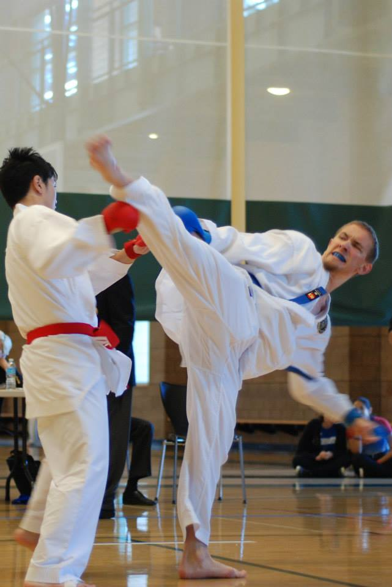

So, you wanna join the Nihon Karate Club...
Great!
We'd be happy to have you join us, whether you're completely new to karate, or a black belt.
We work hard to motivate our members to always strive for their best,
while ensuring that they can feel comfortable learning at their own pace so that all
members are adequately challenged at their respective levels of experience.
What is karate?
Karate is an umbrella term for striking martial arts originating from Japan. The word "karate" translates to "empty hand", referring to the employment of various kicking, hand, elbow, and knee techniques as opposed to weaponry. The specific style NKC trains under is Shindo̅ jinen-ryu̅, one of the six original schools recognized by Dai Nippon Butoku Kai (the first government sanctioned martial arts organization in Japan) in the 1930s. In addition to the standard striking techniques used in most other karate styles, Shindo̅ jinen-ryu̅ draws influence from jujitsu, aikido, and kendo. It is politically manifested by the Japan Karate-do̅ Ryobu-Kai organization, with branches in 23 countries around the world.

Why should I learn karate?
There are a number of physical, mental, and social benefits of learning karate.
- Physical Benefits:
- Strengthen your cardiovasular system
- Strengthen your core
- Increase your flexibility
- Enhance your reflexes
- Mental Benefits:
- Build confidence
- Learn to overcome fear
- Increase your flexibility
- Enhance your reflexes
- Social Benefits:
- Become part of a larger community
- Build life-long friendships
- Learn about the art & culture & philosophy of Japan
Why should I join the Nihon Karate Club?
Being part of the Nihon Karate Club includes:
- Opportunities to compete in tournaments held throughout Southern California
- A family-like social network with its own unique culture
- Lessons from highly esteemed martial artists
- Self-defense, sports, and recreational training
- Relief from stress and improvements in mental and physical health
- Promotion of peace and harmony
- Fun and exciting club events and activities
How do I join?
NKC membership is limited to current UCI students. To sign up, you'll first have to make a Club Sports account with the ARC. Follow this link for more details. In general, you'll have to pay a yearly $15 Club Sports registration fee and complete a concussion baseline test (if you do not have one on record with the ARC already). After that, club membership consists of a quarterly $10 fee to cover tournament, travel, and equipment fees.
I'm not sure about this whole karate thing...
Don't worry, we've all been there. If you're still on the fence, then we'd recommend dropping by one of our Thursday practices. They're at the ARC in the Activity Annex, from 7:30-9:00pm. You don't need a gi, but make sure to bring something you can work out in.
I have some other questions.
Feel free to send an email to the officers at karate@uci.edu, and we'll be happy to answer any of your additional questions.